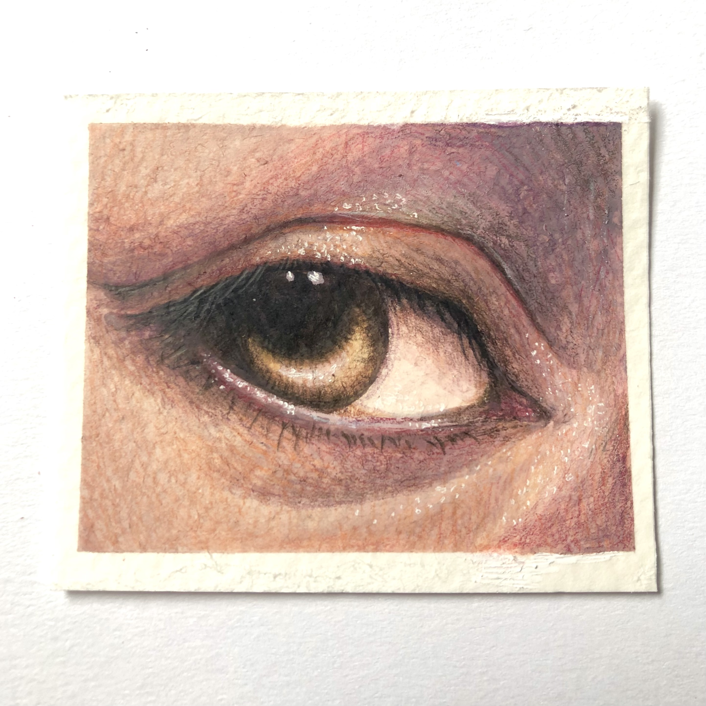

<!DOCTYPE html>
<html lang="en">
<head>
    <meta charset="UTF-8">
    <meta http-equiv="X-UA-Compatible" content="IE=edge">
    <meta name="viewport" content="width=device-width, initial-scale=1.0">
    <title>Contact</title>
    <link rel="stylesheet" href="style.css">
</head>
</html>

<body>
    <div id="wrapper">
        <header>
            <div class="title">
                
            </div> 

            <nav>
                <div class="links">
                    <a href="index.html">Home</a>
                    <a href="interviews.html">Interviews</a>
                    <a href="reflection.html">Reflection</a>
                </div>
            </nav>
        </header>
     
        <main>
            <h1>Reflecting...</h1>
    
            <div class="flexbox">
                <div class="music">
                    
                </div>
                <div class="feel-the-music-text">
                    <h3>Solomon Vidal</h3>
                    <p>Throughout the course of this final project, we’ve gone into many forms of exploration, whether it was the interviews where I learned more about my family and how they listen to music, the creative exploration where I tested out a painting medium I was unfamiliar with or the wireframes where I learned to look at the composition of a website. This final has pushed me to look into several directions so that I might combine them all to create a better website than I had created before.</p>

                    <button onclick="reflection()">  </button>
                </div>

                <section id="hiddenR" style="display:none">
                    <p>I learned a lot from the wireframes about what I think looks appealing when it comes to the composition of a website. It was interesting to see how a website could look visually and I really like planning it out in a way, I thought, looked even and balanced. With the Creative exploration, I learned that gouache isn’t as scary of a medium to work with as long as you work in layers — similar to watercolors. I learned how to control the medium better than I had before. I actually practiced a little right before I created the final exploration pieces that I will be using for my website. It wasn’t big, just testing the medium and the colors, but I feel like it made a big difference in how I employed the medium. Last, but not least, I really liked the experience of talking with my family about something I don’t usually talk about. In my culture, we don’t often talk about feelings; we talk more about success and achievements with the occasional “Did you eat?” question. These interviews helped me to understand my family through music, which is something I’m very close with. Music became a bridge between us. With my grandpa, I reminisced about his life growing up and the types of music he liked because of it. With my mom, I explored her faith and what it means to her in her daily life. With my sister, though we are close, I got to know her a little better in a way that I could understand without having to think too much. It was interesting to learn how music affects people differently, but it also reminded me that music can transcend time, culture, language, etc.</p>

                    <br>

                    <p>With the time we spent on this topic, I feel more attached to this project, in a way, because not only is music something I’m close to, but art, too, because was always “my thing” growing up. I didn’t start coding until my sophomore year in college so I’m in a new frontier of possibilities when it comes to combining the thing I spent most of my life working on and the thing I’m pursuing as a career. Music and art have a special place in my heart so I put 110% into anything that involves either of those creative categories.</p>

                    <br>

                    <p>This topic surprised me because of how unexpected the similarities were between my family and me. I went into this topic expecting a lot of differences and being surprised by them, but I ended up being more surprised about how my grandpa and I listen to similar “oldies” music from artists like Paul Anka, how my mom and I listen to music to feel closer to someone who’s no longer there, and how my sister and I had the same music taste in our youth — Daft Punk being our greatest mutual favorite. There were things I forgot in my past that I was shocked to remember, as well. It really put into perspective how much life I’ve lived through even though I’m still considered young.</p>

                    <br>

                    <p>In the future, I would definitely spend more time with interviews if I decide to go that route. I spent a great deal of time with each individual interview, but I always wondered if I should add some extra information about the interviewees so that the person reading about them knows more about who they are, their values, and their aspirations. In my opinion, it’s some of the most important aspects of a person to know. It would also be interesting to compare the interviewees themselves with how they interact with the topic.</p>

                    <br>

                    <p>In the future, I imagine I’d look deeper into JavaScript and JQuery because they really make the website interactive and dynamic. I believe most of a website's “fun stuff” is in the JavaScript portions as they have animations, interactive buttons, and other useful tools that keep your website easy to navigate and interact with.</p>

                    <br>

                    <p>Overall, I believe that I learned something new, one way or another, with every piece of the project we completed. It really was a breath of fresh air doing research on, and creating artwork for, a topic as expressive as music. I might also use this form of project-building for projects I have in the future as it was well-paced and organized.</p>
                </section>
            </div>
    
        </main>

        <br>

        <a href="#top" class="back-to-top">&uarr;</a>
        <script src="js.js"></script>
    
    </div>
        
    <footer>
        <h2>&copy; Vidal 2023</h2>
    </footer>
       
</body>
